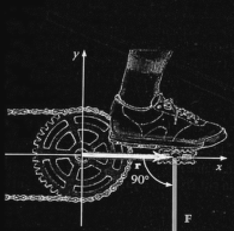
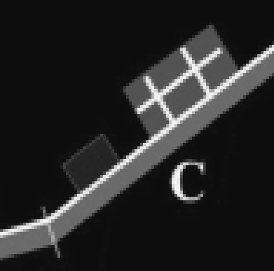

Egy egyenes folyószakaszon átkelő evezős a partra, így a víz folyásirányára is merőlegesen, állandó sebességgel
evez. Mikor ér át hamarabb a túlpartra?
A folyó folyásának sebességétől függetlenül azonos idő alatt ér át.
Két különböző hőmérsékletű, de azonos tömegű testet termikus kölcsönhatásba hozunk. A két test fajhője különböző, a
környezettükkel való hőcsere elhanyagolható. Melyik testnek változik többet a belső energiája a hőmérsékletek
kiegyenlítődése során?
Azonos a két test belsőenergia-változása.
Melyik mértékegységben méri az elektromos szolgáltató a lakás fogyasztását?
kWh
Melyik esetben fejt ki nagyobb forgatónyomatékot a biciklipedál hajtókarja a fogaskerék tengelyére, ha mindkét
esetben azonos F erővel hajtjuk a pedált?

Az alábbiak közül melyik a hidrogén leggyakoribb izotópja?
Az egy protonból és egy elektronból álló (prócium).
Pontos mérlegre helyeztünk egy 10 dkg tömegű főzőpoharat. Benne 1 kg/dm3 sűrűségű víz van, a víz tetején egy kis
fahasáb úszik. A víz szintje pontosan az 1000 ml jelig ér. Mennyit mutat a mérleg?
Pontosan 1,1 kg-ot.
A vezeték nélküli telefontöltő működését szemlélteti az ábra. Mely elektromos jelenség áll a telefontöltő
működésének hátterében?
Az elektromágneses indukció.
Egy postai központban a csomagokat három egyforma, egyenlő hosszúságú, egymáshoz csatlakozó szállítószalaggal
juttatják el az egyik helyről a másikra, amint a mellékelt ábra mutatja. Melyik szállítószalag végzi a
legnagyobb munkát a csomagokon?

Melyik jelenség példa a hullámok elhajlására?
A nyitott ajtórésen át a szobába szűrődő zajokat az egész szobában jól halljuk.
Mikor végez gyorsuló mozgást egy gépkocsi: amikor egyenes úton növekszik a sebessége, amikor egyenes úton fékez,
vagy ha egyenletesen halad egy kanyarban?
Mindhárom felsorolt esetben gyorsuló mozgást végez.
A Földön vagy a Holdon nagyobb egy űrhajós tömege?
A két égitesten ugyanakkora a tömege.
Érvényes-e rádióhullámok esetén a fénytörést leíró törvényhez hasonló szabály?
Igen, a rádióhullámok is megtörhetnek, ha közeghatáron haladnak át.
Egy ultrahangos érvizsgálatnál a véráram sebességét mérik egy érben. Mire utalhat, ha az ér egy szakaszán
felgyorsul az áramlás?
Ezen a szakaszon kisebb az ér keresztmetszete.
Egy vonat adott kezdősebességről fékezve egyenletesen lassul, míg végül megáll. Mekkora a sebessége a fékezési
folyamat félidejénél?
A kezdősebessége fele.
Az A ponttól 1 m távolságban Q nagyságú töltés található. Mekkora töltést kell elhelyezni Q-val átellenesen, az
A ponttól 2 m távolságra, hogy az A pontban az elektromos térerősség nulla legyen?
4Q töltést.
Az alábbi állítások az 𝜶-sugárzásra vonatkoznak. Melyik hamis?
Az 𝛼-sugárzás áthatolóképessége olyan nagy, hogy lényegében gyengítetlenül átjut egy 1 cm vastag
alumíniumlemezen.
Melyik az alább elkezdett mondat helyes folytatása? „Ha egy ellenálláson átfolyó áram erősségét szeretnénk
meghatározni, az ideális áramerősségmérő-műszert…
…az ellenállással sorba kell bekötni, az ideális műszer ellenállása nulla.”
Az Apollo-program során, a holdraszállások alkalmával készült filmfelvételeken látható, hogy a Hold felszínén
napsütésben ugrálnak az űrhajósok, miközben felettük az égbolt fekete. Miért fekete a Hold felszíne fölött az
ég, miért nem kék, mint a Földön?
Mert a Holdnak nincs légköre, mely szórja a fényt, míg a Földnek van.
Az A és B pontok egy központi csillag körül, ellipszispályán keringő bolygó helyzeteit mutatják. Lehet-e a két
pontban a bolygó sebessége azonos nagyságú?
Nem, mert az egyik helyzetben a bolygó biztosan messzebb lesz a központi csillagától.
Elhanyagolható tömegű, könnyen forgó állócsigán 5 kg tömegű terhet húzunk fel állandó sebességgel. Mekkora erő
terheli a csiga felfüggesztését, ha mindkét kötélszár függőleges?
Kb. 100 N.